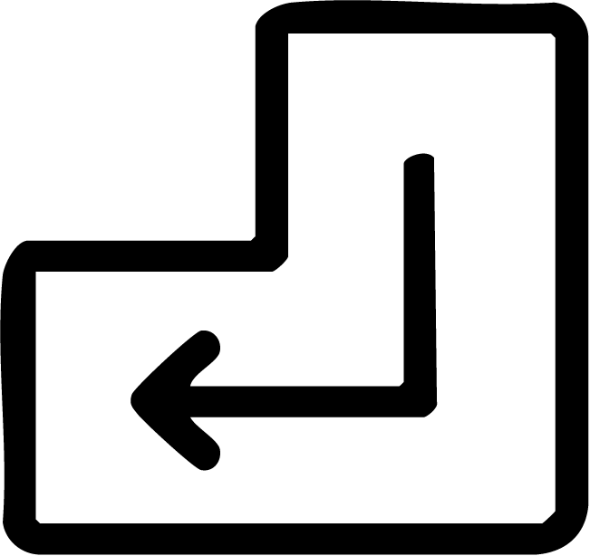
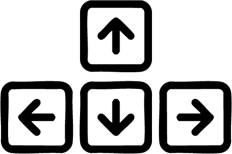
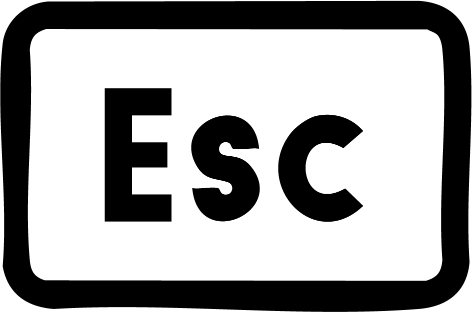

The Keyboard
Browsing with a keyboard
Keyboard navigation enables you to navigate through menus, select buttons and interact with various web elements relying entirely on keystrokes.
Reasons for use
Accessibility
Enhancing web accessibility, keyboard navigation provides an alternative means of web interaction for users with disabilities such as motor impairments or users who rely on a keyboard in tandem with their screen reader. It allows users to navigate web pages using the keyboard alone, making websites accessible to a broader audience.
Productivity
Keyboard navigation is useful for users who prefer keyboard shortcuts for efficiency and speed. This efficiency is valuable in professional settings where saving time translates to increased productivity.
Nostalgia
Keyboard navigation is also used by a number of people who prefer a more "old-school" way of operating a computer.
Overall, keyboard navigation enhances web browsing for all types of users. This inclusivity promotes a more equitable digital environment and allows individuals to navigate web content in their preferred manner.
The Concept
Keyboard navigation relies on the browser's ability to recognize and respond to specific key presses, which triggers certain actions. There are certain keys that play important roles.
Standard navigation keys
Tab key
The Tab key is used to navigate through interactive elements on a web page and moves the focus forward through interactive page elements. It's essential for scrolling through links, buttons, and form fields in a logical order (e.g., for English pages, this means seamless navigation from left to right and from top to bottom)
Enter key
Activates the focused element, equivalent to clicking with a mouse. It's commonly used for interacting with buttons, form fields, and links.
Arrow keys
(left & right)

Navigate between items within a component, such as dropdown menus, offering precise control.
Esc key
Often used to close or exit modal windows, dropdowns, or dialogues, providing a way to back out of current interactions.
What is a Focus indicator?
A key element of keyboard navigation is the focus indicator. A focus indicator is presented when interactive elements are in focus. This ensures that keyboard users have a visual indication of the element that they are currently interacting with.
So even though the mouse and touchpad play a vital role in today's web use, maybe think about adding some keyboard navigation elements when designing, in order to ensure everyone has a fun and smooth experience navigating your webpage✨.